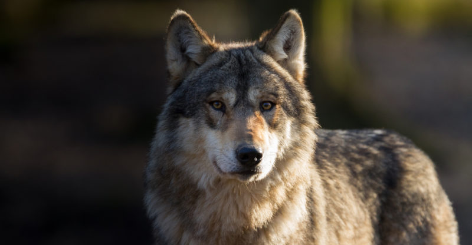

El lobo (Canis lupus) es una especie de mamífero placentario del orden de los carnívoros. El perro doméstico (Canis familiaris) se consideraba miembro de la misma especie según distintos indicios, la secuencia del ADN y otros estudios genéticos. Sin embargo, fue hasta 1758 que se consideró una especie distinta por el biólogo Carl Linneaus en la décima edición de Systema naturæ. El primer registro fósil data de hace ochocientos mil años Antaño los lobos fueron abundantes y se distribuían por Norteamérica y Eurasia. No obstante, por una serie de razones relacionadas con el hombre, los lobos habitan únicamente en una muy limitada porción del que antes fue su territorio.
« Atras